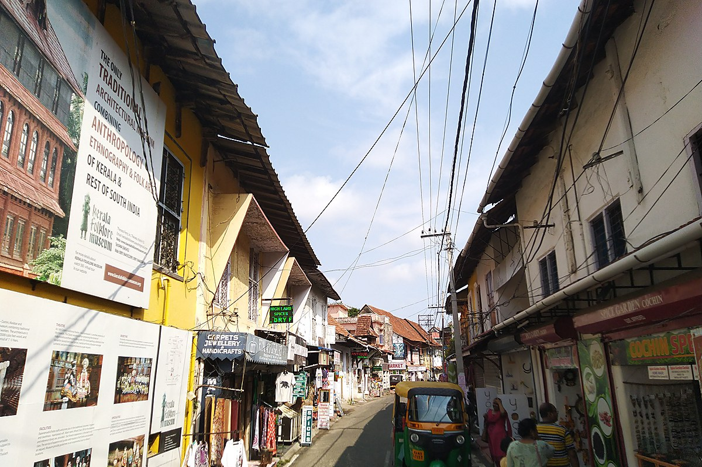
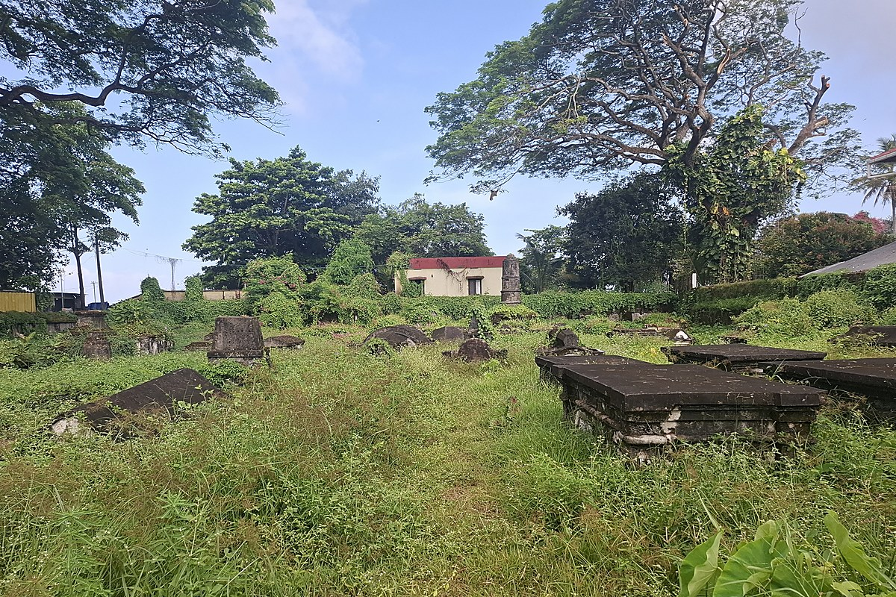
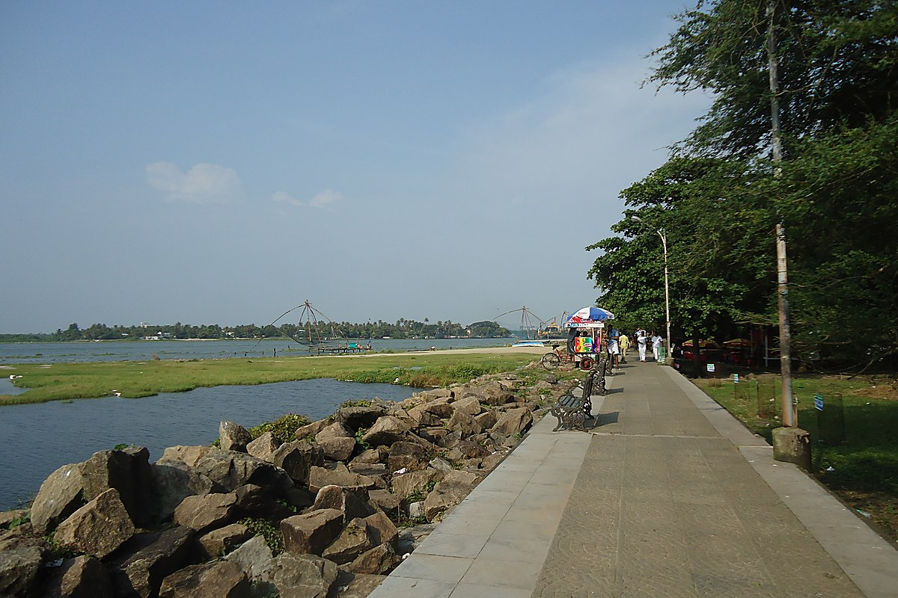

01 / Route planning
Two walks, already in order
The 16-stop Heritage Loop runs waterfront to church to cemetery to Jew Town. Or let a 2-hour, half-day or full-day plan choose the next stop for you.
See the routesFort Kochi, Kerala · A walking companion
A quiet audio guide for the old streets of Fort Kochi. It knows when you arrive, tells you what happened here, and then lets the place speak for itself.
No buttons before every story. Walk into a stop and the guide begins — after a short dwell, so passing traffic doesn’t trigger chatter. A 30-minute cooldown keeps the same story from repeating.

Stand in front of a façade and tap once. The guide uses your position and heading to name the closest landmark, then reads the answer from the pack already on your phone.
Three things we refused to compromise on: the order of the walk, the signal you don’t need, and the quiet when you want it.
The 16-stop Heritage Loop runs waterfront to church to cemetery to Jew Town. Or let a 2-hour, half-day or full-day plan choose the next stop for you.
See the routesThe Fort Kochi pack is built in: 24 stories, opening hours, two routes, and the map. About 180 MB of tiles if you want the basemap offline.
See the packs
Quiet hours from 10 pm to 7 am. A 30-minute cooldown. Mute in under half a second. Audio only starts when you ask it to.
See the settingsStart directions in Google Maps and Travel Guide follows along. It reads the active route, pre-loads the stops within 450 m of your path, and clears itself when navigation ends.
Tap to hear the story. Keep walking — it will wait.
Download the district once and the map, stories and narration keep working. No roaming bill, no loading spinner at the corner of a 16th-century street.
Field notes · Fort Kochi
Not reviews. Just the kind of thing the guide tells you when you’re standing in front of it.
Get the app“Cantilevered teak, granite counterweights, and the last working 14th-century lift nets outside China.”
“Built in 1503, it held Vasco da Gama’s body before his remains were taken to Lisbon.”
“In the Pardesi Synagogue, hand-painted Chinese tiles arrived in the 18th century — no two the same.”
No account. No ads. No analytics. The guide works from the pack on your phone, and your location stays in memory while you walk.
There is no sign-in, no advertising SDK, and no analytics SDK. The app has nothing to sell.
Trip notes are sealed with a hardware-backed Android Keystore key using AES-256-GCM. The key never leaves the phone.
GPS fixes are used while you walk and are not uploaded. Background location is a separate opt-in, never bundled with first launch.
The on-device voice works offline. Cloud voices and the optional AI guide only run when you turn them on. Read the full privacy policy
Install the app, put the phone in your pocket, and walk. The first story arrives when you reach the water.

Built in · 24 stops · offline ready